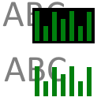

AaronOS Music

Transparent (GPU On)
Transparent (GPU Off)
Visualizers exhibit flashing lights that may cause issues for people with a photosensitivity.
Mobile devices can only use one file at a time.
Uploaded files never leave your device and are not uploaded to the AaronOS server.
AudioVision designs were originally by Štefan Schindler.
No Song Playing
Volume:
Visuals:
Colors:
Curve: